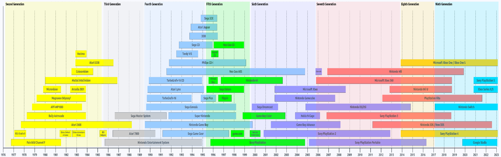
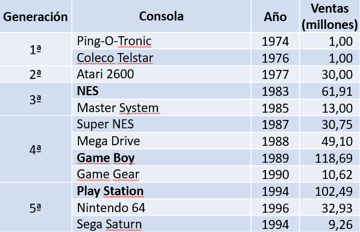
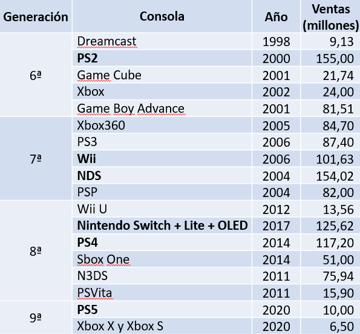
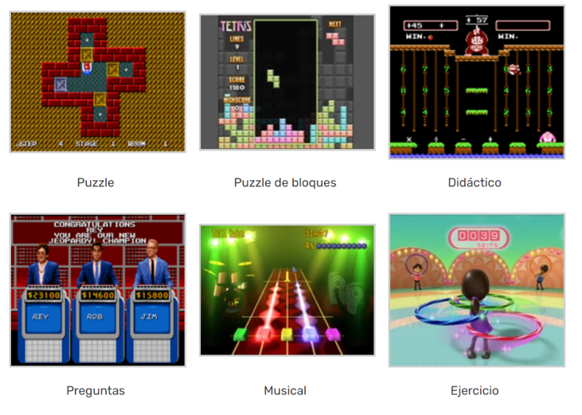
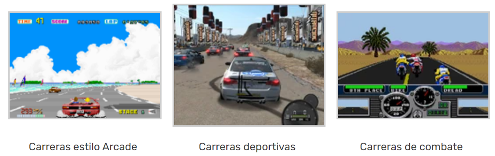
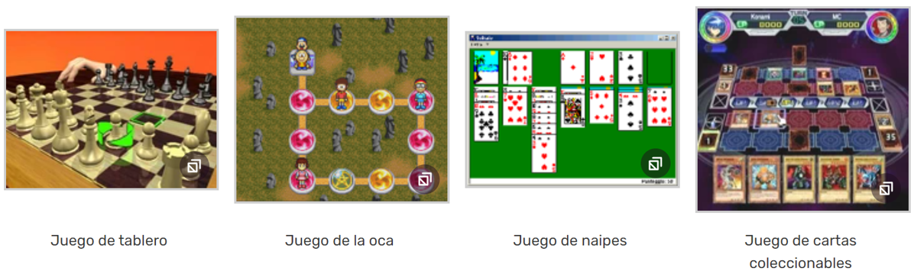
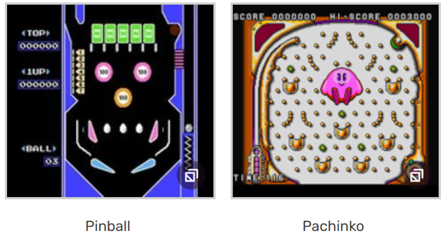

Un videojuego es un juego que se apoya en medios electrónicos para el desarrollo del mismo.
Es un software de entretenimiento que haciendo uso de las capacidades de los equipos electrónicos permite que
el usuario/los usuarios interactúen con un mundo virtual con la finalidad de alcanzar un objetivo.
En su origen la finalidad de los videojuegos era el entretenimiento,
finalidad que se mantiene en la mayoría de videojuegos actuales aunque también existen videojuegos educativos e instructivos.
Los equipos electrónicos usados para ejecutar videojuegos son conocidos como plataformas, hoy en día las plataformas más extendidas son
ordenadores, consolas, móviles y táblets.
Plataformas
Plataformas
Aplicaciones VS Videojuegos
Aunque a nivel técnico los dos son programas informáticos, existen algunas diferencias significativas:
Objetivo.
Interacción.
Modelo de negocio.
Diseño y estética.
Un poco de historia
Primer videojuego de la historia
Tennis for Two (1958)
Con unos osciloscopios jugaban a pasarse la pelota
Los videojuegos están en constante evolución, según los siguientes factores:
Avances tecnológicos.
Nuevos tipos de dispositivos.
Conectividad.
Cultura.
Gustos y preferencias de los consumidores.
Tiempo disponible para jugar.
…
Los tres primeros son los más determinantes debido a que estos factores influyen directamente en las mecánicas que pueden tener los videojuegos.
Por ejemplo, la aparición de dispositivos táctiles permitió crear mecánicas que no existían previamente.
Cuando se habla de videoconsolas es más sencillo estudiar su evolución debido a que estas se pueden clasificar por generaciones.
 Gráfico basado en las fechas de lanzamiento de UK.
Ventas por generación
 
Mercado en la actualidad
Se estima que en 2023 el mercado de los videojuegos alcanzó los 240.000 millones de dólares en todo el mundo.
China, EEUU y Japón se encuentran en el top 3 mundial en ingresos.
En Europa en el top 5 de mercados se encuentran Alemania, UK, Francia, España e Italia.
España está tras Polonia en el segundo puesto mundial en facturación en videojuegos e-sports.
El mercado de los videojuegos está en constante crecimiento.
Las razones de este crecimiento son:
Auge de uso de dispositivos móviles.
Expansión de la Realidad virtual y aumentada.
Evolución de los dispositivos.
Evolución de las tecnologías asociadas (aprendizaje automático, inteligencia artificial…).
Aventura de acción: plataformas de exploración, sigilo, survival horror, conducción por misiones.
Ingenio y coordinación
Puzzle.
Puzzle de bloques.
Didácticos.
Preguntas.
Musicales.
Ejercicio físico.

Pensamiento y administración
Estrategia: artillería, por turnos, en tiempo real, construcción de imperios
Simulación: construcción y administración, negocios, oficios, manager deportivo, simulador de vehículo, simulador de vida.
Deportivos
Simulador de deportes: deportes reales, deportes ficticios.
Carreras: arcade, deportivas (reales), combate.

Juegos de mesa: de tablero, naipes, cartas coleccionables.

Mecánicos: pinball, pachinko.

Fases de desarrollo de videojuegos
Concepto (análisis)
Como con cualquier aplicación, los videojuegos comienzan con una idea y su análisis, en este análisis se determinan los aspectos del juego:
Género.
Gameplay.
Personajes.
Ambiente.
Música.
…
El concepto suele acompañarse de un guión gráfico como un storyboard con todas las ideas.
Pre-producción (análisis)
Con el concepto decidido se pasa a la definición de todos los elementos que componen el juego como el desarrollo de la historia,
versiones iniciales de los guiones con los objetivos, desarrollo de los personajes…
Con esta información los artistas comienzan a crear propuestas de diseños para ir dando la forma definitiva.
También se describe toda la parte sonora del juego como efectos, música, voces…
De manera paralela se debe especificar el funcionamiento general del juego.
En la parte técnica se realiza el diseño de la programación indicando cómo se implementará el juego, los lenguajes de programación, las metodologías…
Toda la información anterior tiene como objetivo generar el GDD (Game Design Document)
en el que se especifica toda la planificación necesaria para la implementación del juego.
Por último, en esta fase se puede realizar un prototipo muy básico del juego.
Producción (implementación)
Durante la implementación el primer paso es crear una versión inicial del juego la cual se irá mejorando gradualmente durante la implementación.
El primer paso es generar todos los assets necesarios en base a los requisitos indicados en el GDD.
Una vez se tienen todos los assets o la mayoría de ellos se debe "ensamblar" el juego.
En esta parte es donde se utiliza el motor de videojuegos.
Pruebas
Esta fase consiste en corregir los errores que se van detectando durante la producción.
Las pruebas suelen ser de dos tipos:
Alpha:
Realizadas por personas involucradas en el desarrollo.
Su objetivo es corregir errores graves y mejorar características.
Beta:
Realizadas por personas externas al equipo de desarrollo.
Su objetivo es detectar fallos menores y mejorar la experiencia de usuario.
Post-producción
En esta fase las tareas a realizar son:
Marketing: dar a conocer el juego.
Distribución: crear copias físicas/digitales y hacerlas llegar a las tiendas.